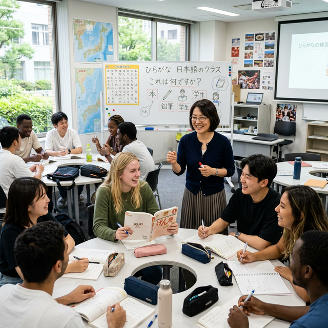

Chinh phục JLPT N4 chỉ trong 5 tháng. Tự tin giao tiếp và sẵn sàng cho tương lai tại Nhật Bản.
Chương trình đào tạo tiếng Nhật tại Sora Japan được thiết kế đặc biệt dành cho những người mới bắt đầu hoặc muốn đẩy nhanh tiến độ học tập để phục vụ cho mục tiêu du học, xuất khẩu lao động và phát triển sự nghiệp.

Thời gian luôn là vàng bạc đối với mỗi học viên. Hiểu được điều đó, Sora Japan mang đến chương trình đào tạo tối ưu hóa giúp bạn học xong chương trình N4 chỉ trong vỏn vẹn 5 tháng. Lịch học được sắp xếp khoa học:
Tại Sora Japan, chúng tôi không chỉ dạy bạn cách thi qua bằng cấp. Đích đến cuối cùng là khả năng ứng dụng thực tiễn. Đảm bảo đầu ra tự tin giao tiếp ở level N4, học viên hoàn toàn có thể sinh sống, làm việc và giao tiếp với người bản xứ Nhật Bản một cách trôi chảy, hiểu rõ văn hóa và phong cách giao tiếp chuẩn mực.
Điểm khác biệt lớn nhất tạo nên sự thành công của khóa học chính là Giáo trình độc quyền. Chương trình học được đích thân các Giáo sư ngôn ngữ học người Nhật hợp tác cùng đội ngũ Giáo viên Nhật ngữ người Việt với nhiều năm kinh nghiệm giảng dạy và tu nghiệp tại Nhật Bản tiến hành soạn thảo và chắt lọc.
Chúng tôi tập trung vào trọng tâm, loại bỏ kiến thức rườm rà, kết hợp các phương pháp ghi nhớ từ vựng và Kanban hiện đại nhất.